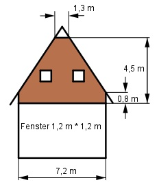

Aufgabe 179 Wie viel m2 Holz braucht man für die Verschalung, wenn mit 20% Verschnitt gerechnet wird?

A = Rechteck + Trapez – 2 * Fensterfläche Rechteck = 7,2 m * 0,8 m = 5,76 m2 7,2 m + 1,3 m Trapez = ----------------- * (4,5 m – 0,8 m) = 2 = 15,725 m2 2 * Fensterfläche = 2 * 1,2 m * 1,2 m = 2,88 m2 A = 5,76 m2 + 15,725 m2 - 2,88 m2 = 18,6 m2 A + Zuschlag für Verschnitt = 1,2 * 18,6 m2 = = 22,3 m2